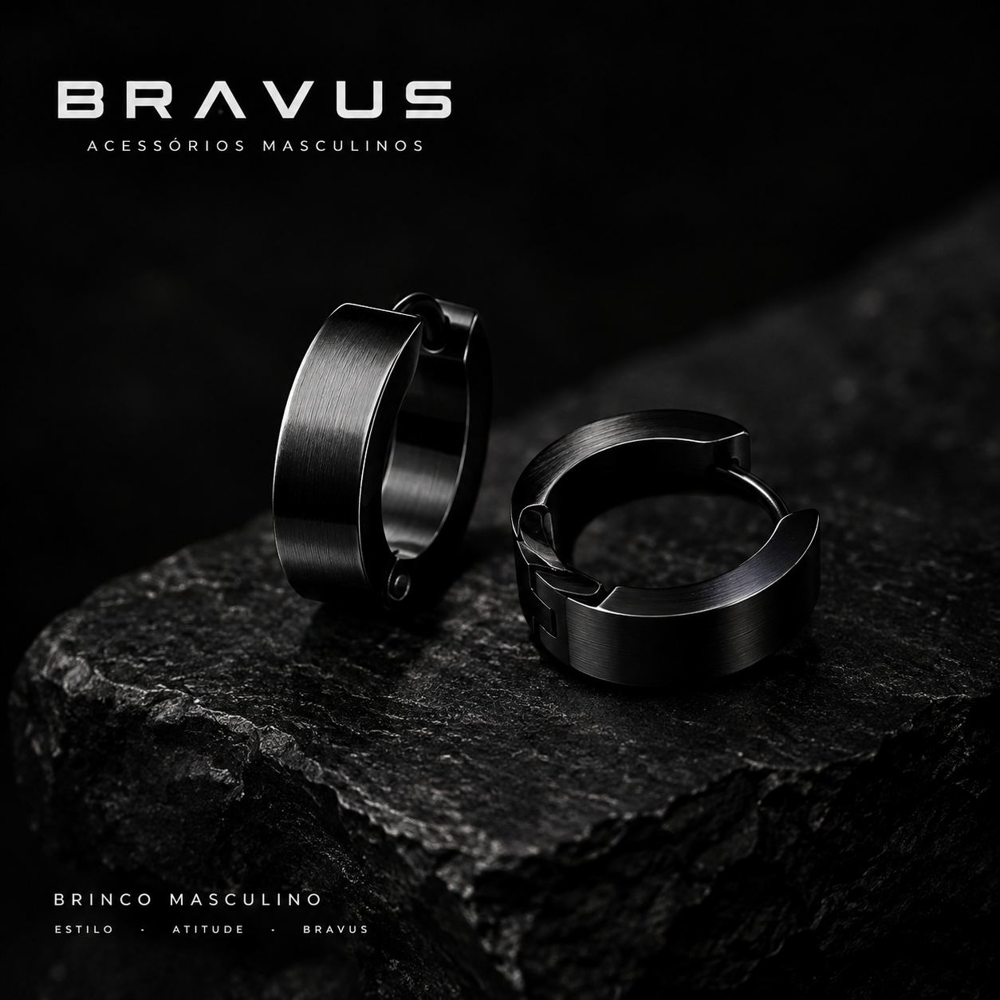
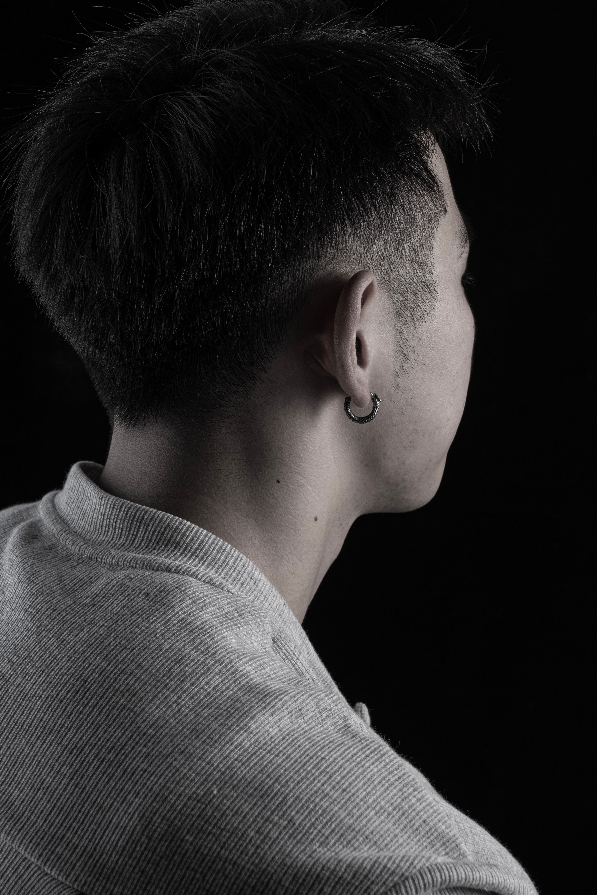
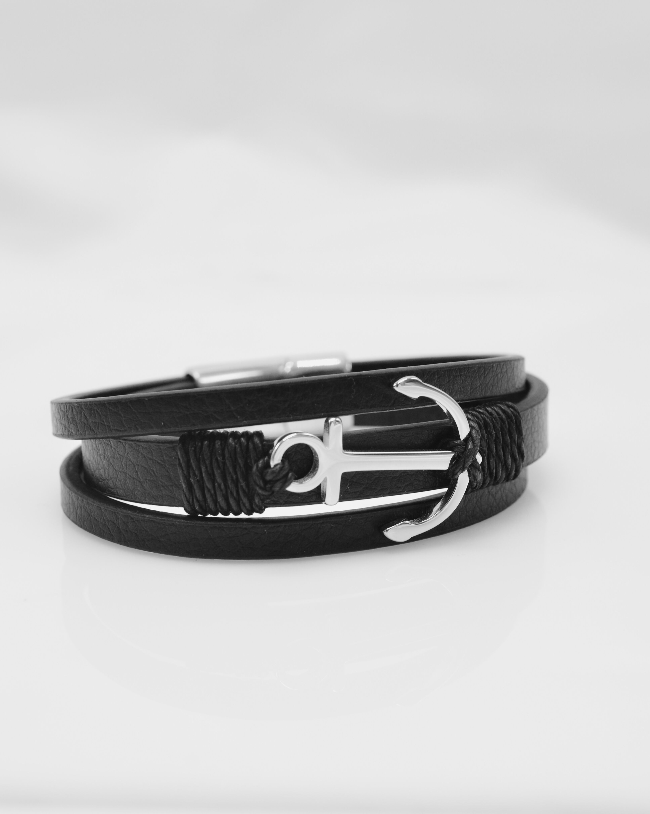
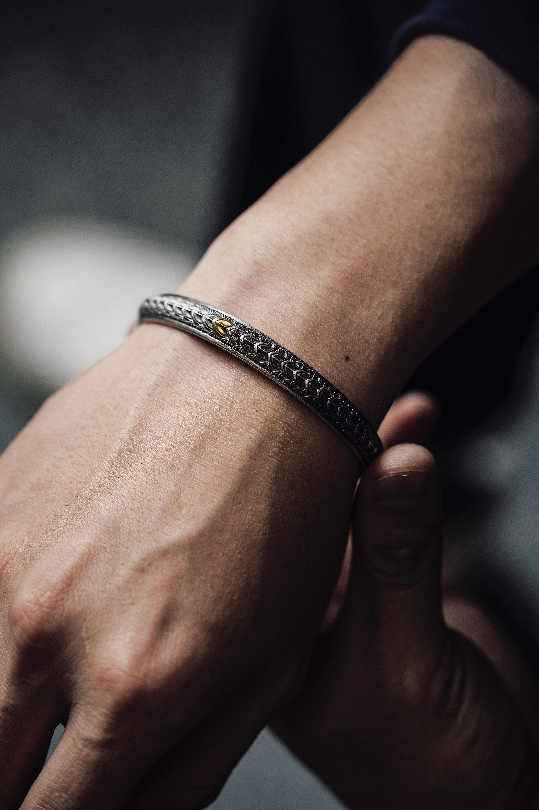
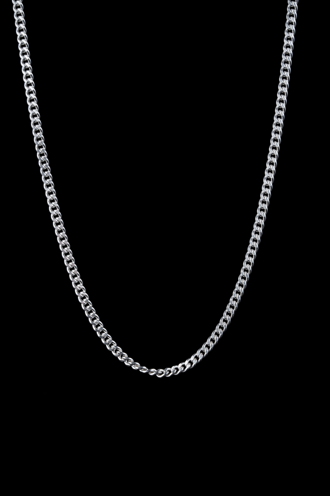

Brinco masculino

O brinco masculino é um acessório versátil que pode complementar diferentes estilos, desde produções casuais até visuais mais marcantes.
- Material: aço inoxidável
- Estilo: moderno e versátil
- Uso: casual e cotidiano

O brinco masculino é um acessório versátil que pode complementar diferentes estilos, desde produções casuais até visuais mais marcantes.

O piercing masculino é um acessório que transmite personalidade e atitude. Com diferentes estilos e formatos, ele pode transformar um visual simples em uma composição mais marcante e autêntica.

A pulseira masculina de couro combina um visual marcante com um toque de rusticidade e personalidade. Versátil e atemporal, é uma ótima escolha para quem busca um acessório que valorize o estilo sem perder a simplicidade.

O bracelete masculino é um acessório que combina presença e sofisticação. Com seu design marcante, ele pode complementar o visual e transmitir confiança, tornando-se um destaque na composição.

O cordão masculino de prata é um acessório que combina elegância e personalidade. Seu brilho discreto acrescenta sofisticação ao visual, tornando-o uma escolha versátil para diferentes ocasiões.